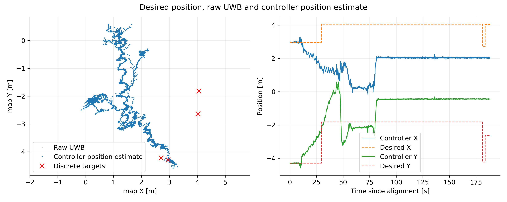
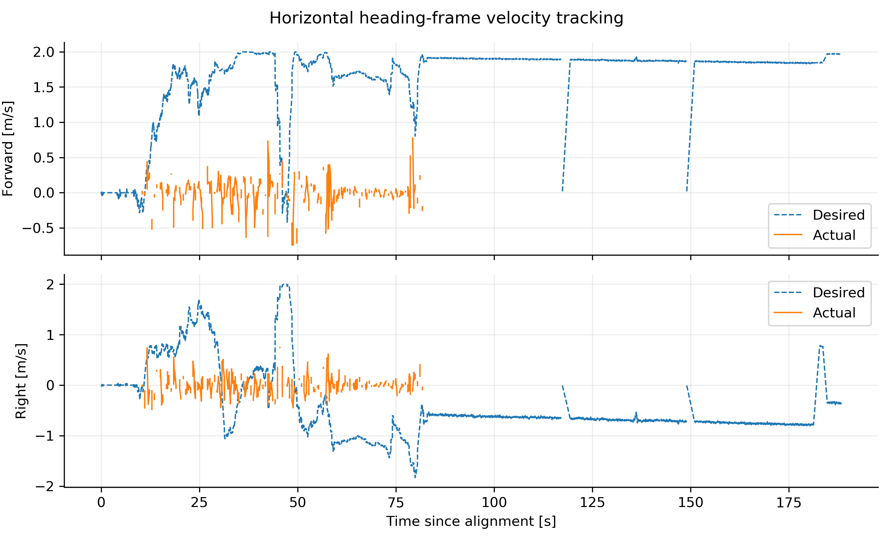
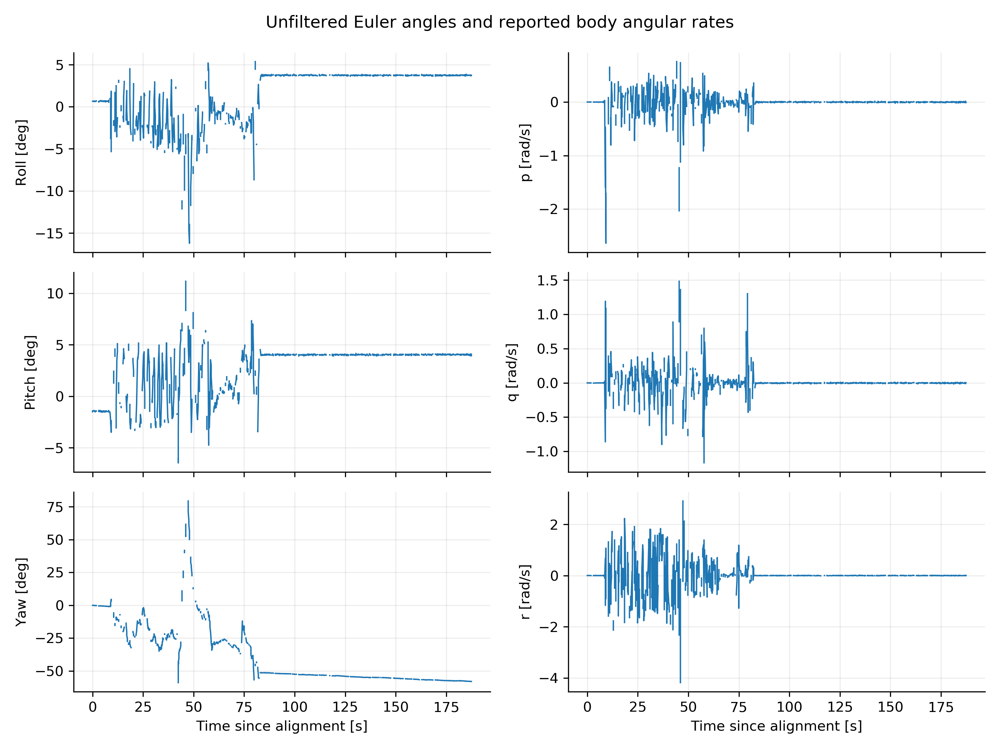
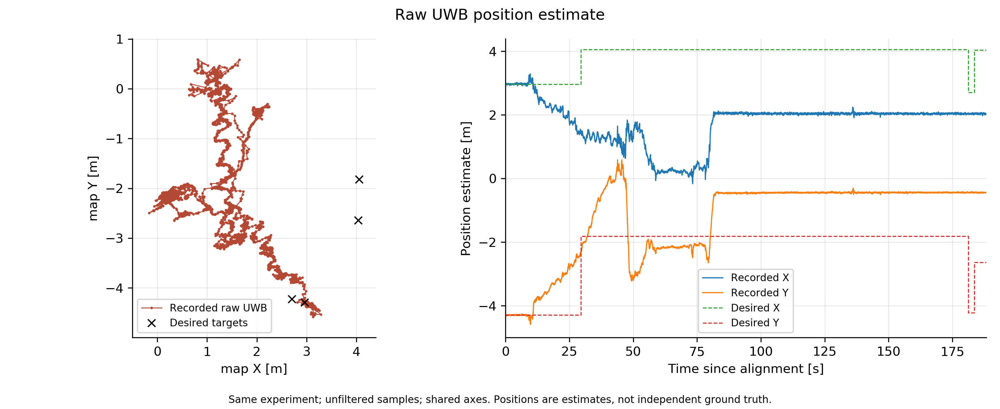
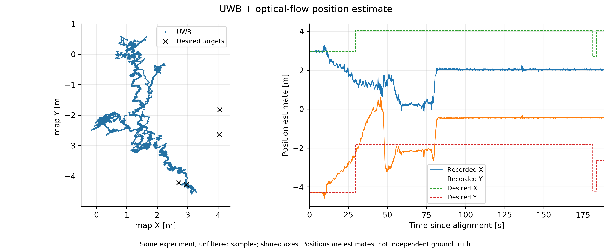

20261125_004742_flight_2367410741985
原始CSV未经离线滤波；角度单位deg，机体角速度单位rad/s。期望位置为导航节点实际接受的目标。Raw UWB为原始定位输出，Controller position estimate为控制器实际采用的估计，不是独立真值。



两张图使用相同坐标和时间范围，原始点未经离线滤波。补偿曲线为实时定位选择器的记录，不是另一架次的无辅助飞行轨迹。着色区间表示算法未接受UWB，断流不补点。
本次定位选择器的有效光流接管输出样本：0；控制器辅助开关：True。
本次未记录有效光流接管样本，不能据此说明接管改善。

flow_compensated_trajectory PDF

对照原始点：
CSV文件：